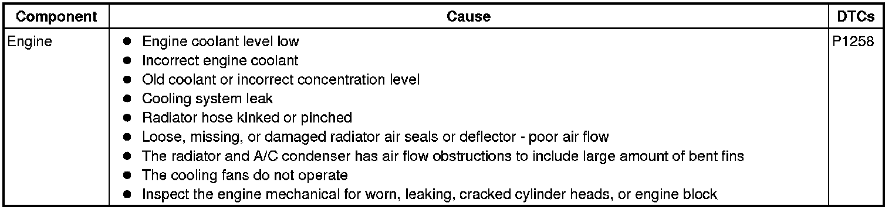
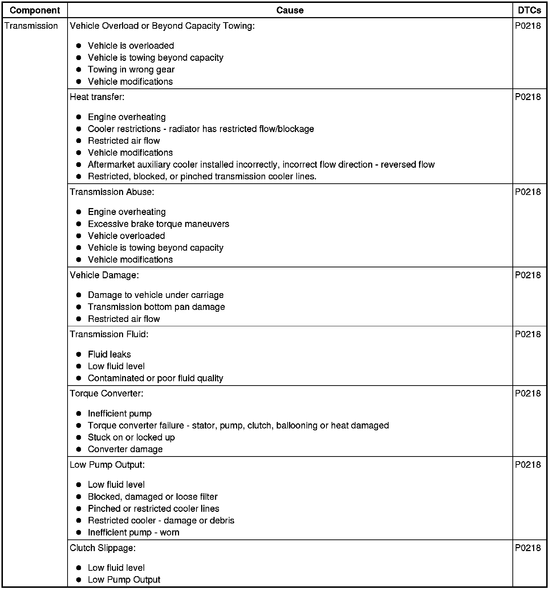

6L50/6L80/6L90 - Automatic Transmission
DTC P0218
Diagnostic Instructions
* Perform the Diagnostic System Check - Vehicle (Initial Inspection and Diagnostic Overview) prior to using this diagnostic procedure.
* Review Strategy Based Diagnosis (Initial Inspection and Diagnostic Overview) for an overview of the diagnostic approach.
* Diagnostic Procedure Instructions (Initial Inspection and Diagnostic Overview) provides an overview of each diagnostic category.
DTC Descriptor
DTC P0218
- Transmission Fluid Overtemperature
Diagnostic Fault Information


Circuit/System Description
The primary source of heat in the transmission is the torque converter. Hot oil exits the torque converter through the torque converter clutch (TCC) control valve and flows to the transmission cooler supply line. The supply line connects to the cooler, which is in the radiator. From the cooler, the oil returns through the oil cooler return line and enters the lubrication circuits. After lubricating the internal components, the oil returns to the oil pan. The transmission fluid temperature (TFT) sensor is located in the control solenoid (w/body and TCM) valve assembly.
Conditions for Running the DTC
* Ignition voltage is at lease 8.6 volts, but no more than 19.0 volts.
* The TFT is -39 to +149°C (-38 to +300°F) for 5 seconds.
Conditions for Setting the DTC
The TFT is greater than 140°C (284°F) for 1 minute.
Action Taken When the DTC Sets
* DTC P0218 is a Type C DTC.
* The TCM freezes the transmission adaptive function.
Conditions for Clearing the DTC
DTC P0218 is a Type C DTC.
Diagnostic Aids
The driver information center (DIC), if equipped, will display 'TRANSMISSION HOT- Idle Engine' when the TFT reaches 132°C (270°F). The TFT on the scan tool should rise steadily to a normal operating temperature, and then stabilize.
Ask the customer whether their typical day-to-day driving include:
* Trailer towing
* Hauling or vehicle over-loading
* Hot climate driving
* Extended idling
* Extreme off-road conditions
Trailer towing should occur in D4. Ensure the engine cooling system is functioning normally.
Reference Information
Schematic Reference
* Park - Engine Running (Park - Engine Running)
* Reverse (Reverse)
* Neutral - Engine Running (Neutral - Engine Running)
* Drive Range, First Gear Engine Braking (Drive Range, First Gear Engine Braking)
* Drive Range, First Gear (Drive Range, First Gear)
* Drive Range, Second Gear (Drive Range, Second Gear)
* Drive Range, Third Gear (Drive Range, Third Gear)
* Drive Range, Third Gear Default (Drive Range, Third Gear Default)
* Drive Range - Fourth Gear (Drive Range, Fourth Gear)
* Drive Range, Fifth Gear (Drive Range, Fifth Gear)
* Drive Range, Fifth Gear Default (Drive Range, Fifth Gear Default)
* Drive Range, Sixth Gear (Drive Range, Sixth Gear)
* Fluid Passages (Fluid Passages)
* Engine Cooling Schematics (Electrical Diagrams)
Description and Operation
* Transmission General Description (Transmission General Description)
* Transmission Indicators and Messages (Transmission Indicators and Messages)
DTC Type Reference
Powertrain Diagnostic Trouble Code (DTC) Type Definitions (Diagnostic Trouble Code Descriptions)
Circuit/System Verification
1. Review the Failure Records when the DTC set.
• If the engine coolant temperature (ECT) was above 125°C (257°F) when the DTC set, go to Engine Overheating (Engine Overheating) and correct that concern first.
2. Perform the Transmission Fluid Check (Transmission Fluid Check) to verify correct fluid level and condition.
Circuit/System Testing
1. Inspect the transmission cooling system for restrictions or damage, inducing any auxiliary cooler if equipped.
2. Perform the Transmission Fluid Cooler Flushing and Flow Test (J 45096) (Automatic Transmission Oil Cooler Flushing and Flow Test (J 45096)) to verify proper transmission oil cooler flow.
• If a concern is found, repair or replace the damaged components as necessary.
3. Perform the Line Pressure Check (Line Pressure Check) to verify proper transmission line pressure.
• If a concern is found repair or replace the damaged components as necessary.
Repair Instructions
Perform the Diagnostic Repair Verification (Verification Tests) after completing the diagnostic procedure.
Repair or replace the automatic transmission cooler or lines as necessary. Refer to Transmission Fluid Cooler Pipe Replacement - Front (Service and Repair) , Transmission Fluid Cooler Pipe Replacement - Rear (Service and Repair) , and Engine Oil and Transmission Fluid Cooler Replacement (6L50/6L80/6L90 - Automatic Transmission) .